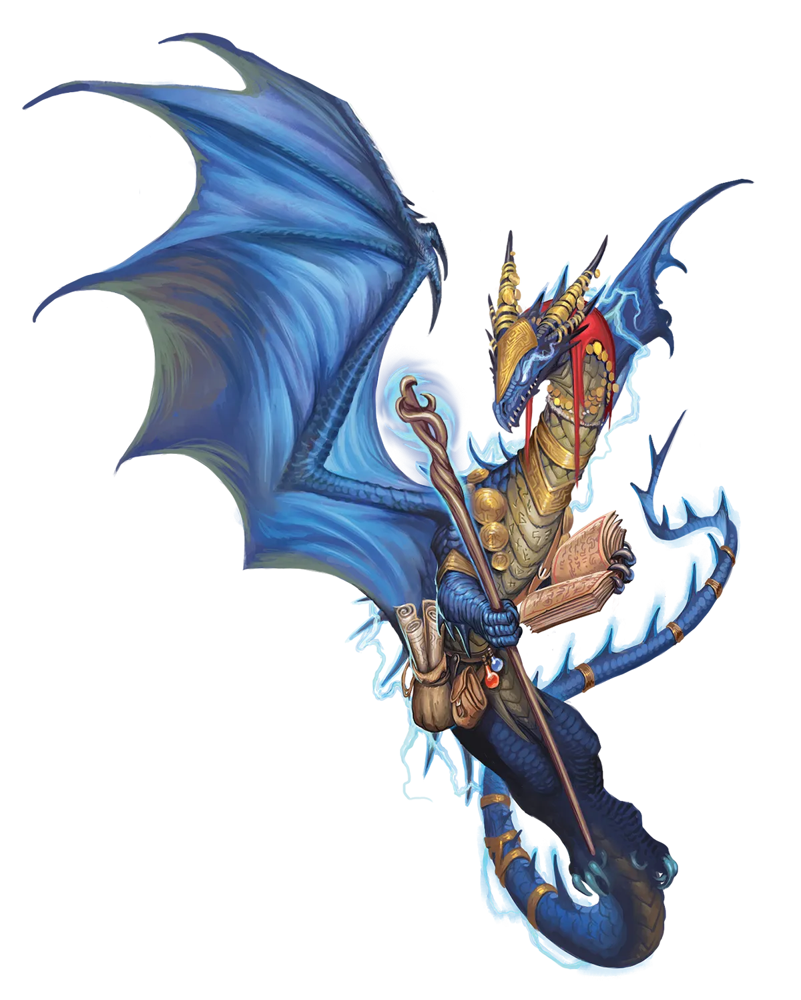
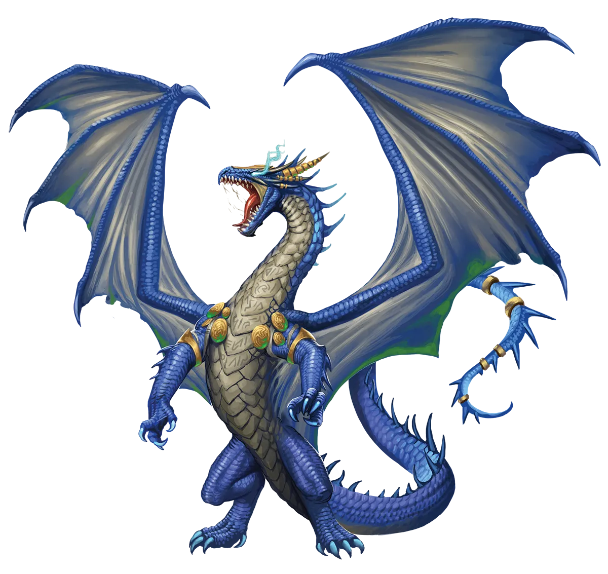

苍蓝傀儡师
蓝龙自以为聪明绝顶，总是能领先他人一步。诚然，有时它们确实如此，但仍有某些模式可循，让你能轻易识破它们的计划。它们不愿在非必要之时动用宝贵的棋子，因此你需留意它们的棋子如何移动。寻找那些看似在违背自身利益行事之人，你或许就找到了棋子。顺着棋子的行动追溯几层间接关系，你便能推断出蓝龙的真实意图，进而追查其他棋子与更宝贵棋子的动向。
蓝龙 Blue Dragon |
|
|
蓝龙生性爱操控、富有教养且高度合群，它们倾向于彼此进行微妙的智力博弈来解决关于永恒之光仪式的分歧，而非直接展开战斗、冲突或辩论。这些计划的最终目标，是间接地向其他龙类证明自己对仪式的立场，而不必直截了当地主张自身观点。因此，在外人看来，蓝龙传统派与永光蓝龙之间的互动显得格外彬彬有礼，但在暗处，多重阴谋与计划正在酝酿，相互碰撞，与其他种种谋略一并走向冲突的终点。 永光蓝龙进一步放大了蓝龙本就出众的社交活动嗜好。因此，它们极有可能生活在类人社会与聚落中，常以隐姓埋名的变形形态出现。它们不仅会加入冒险团队以施展魔法力量、借仪式更快成长，还常常主动费心组建这类团队。它们会细致而巧妙地汇聚恰到好处的冒险者组合，以确保成功率最大化。在最张扬的时候，它们是酒馆中披着斗篷的神秘身影，向潜在的英雄提供一场惊心动魄的冒险；但大多数蓝龙远比此更为谨慎，能够在不被任何人察觉的情况下组建起团队。一旦组成队伍，蓝龙很少试图在这些团体中直接承担领导角色，反而偏好于幕后操控，让其他人或整个团队自以为掌权。蓝龙重视同伴冒险者的能力与忠诚，一旦发现队伍成员背叛团体，尤其是窃取队友财物，蓝龙通常会孜孜不倦地策划计谋，以无可辩驳的方式向其他成员证明罪者的罪行，从而羞辱叛徒、凝聚共识，并施加严厉惩罚。最直接的计谋往往涉及诱使潜在盗贼在队友暗中目睹的情况下行窃，但它们的计划也可能包含更为复杂的步骤与布局。背叛越深，局势往往越复杂。反过来说，那些精心组建了忠诚而能干的冒险团队的蓝龙，会将同伴冒险者视作自己宝藏的一部分――毕竟，蓝龙为收集和安排他们付出的心血，不亚于任何龙类经营自己的宝库――因此它们也会回报以强烈的保护欲与忠诚。正因如此，背叛才会如此深刻伤人；这不仅是对龙类及其宝库的侵犯，更是对蓝龙组建团队的眼光的侮辱――它们竟会选择了一个日后背叛自己的人。 冒险型蓝龙在涉及社交操控与幻术的职业上尤为出色，使其特别擅长基于魅力的施法者职业，如吟游诗人和术士。然而，它们对计谋与策略的热爱，以及想以优雅风度取胜的渴望，也使其与游荡者等职业相得益彰。 苍蓝傀儡师 蓝龙自以为聪明绝顶，总是能领先他人一步。诚然，有时它们确实如此，但仍有某些模式可循，让你能轻易识破它们的计划。它们不愿在非必要之时动用宝贵的棋子，因此你需留意它们的棋子如何移动。寻找那些看似在违背自身利益行事之人，你或许就找到了棋子。顺着棋子的行动追溯几层间接关系，你便能推断出蓝龙的真实意图，进而追查其他棋子与更宝贵棋子的动向。 蓝龙特质 Blue Dragon Traits 你出身于一脉沉着老练、借阴谋罗网攫取权力的蓝龙世系。 |
  |